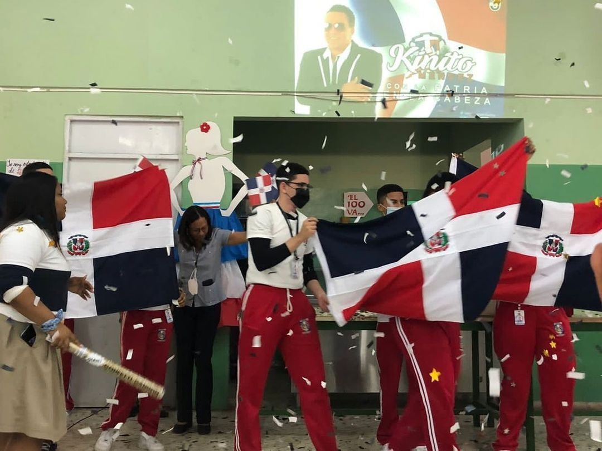
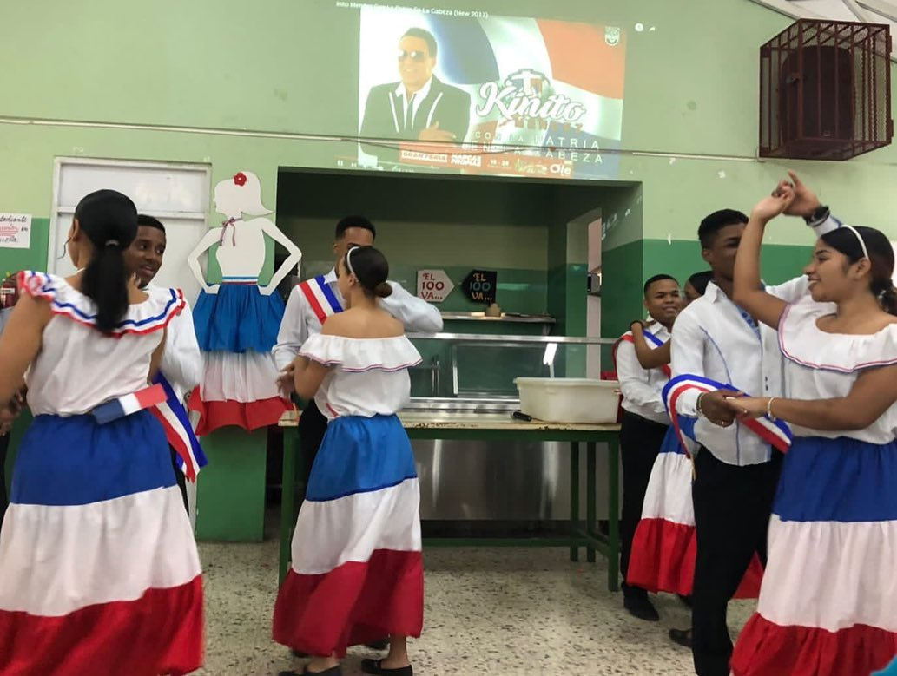

El pasado lunes 28 de febrero conmemoramos el 178 de nuestra Independencia.
Entre las actividades, se realizó un recuento de los actos independentistas, creación de la organización la Trinitaria y el izado de la bandera tricolor.
La actividad estuvo organizada por el área de ciencias sociales dirigidas por las maestras Lorenza Cedano y Yolanda Alcántara, acompañadas de los estudiantes de las diferentes secciones.